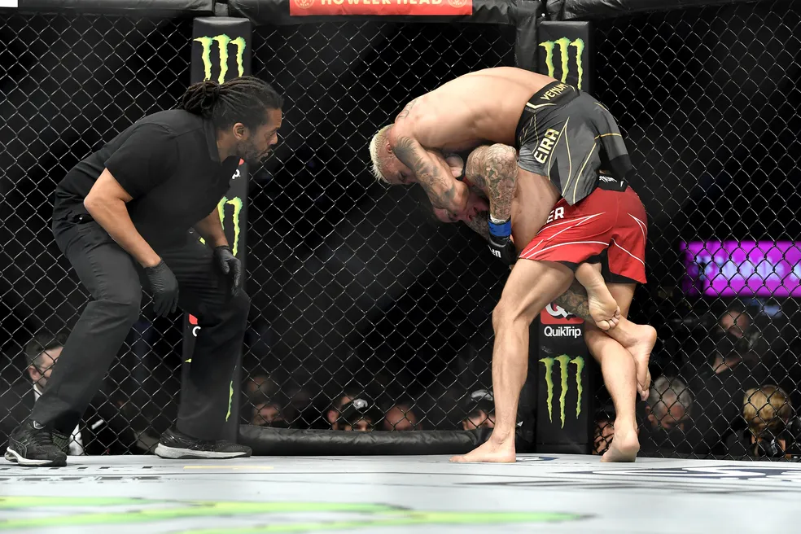

Jiu-Jitsu no UFC
Domínio no chão — a arte suave nos octógonos
O que é o Jiu-Jitsu?
O Jiu-Jitsu Brasileiro (BJJ) é uma arte marcial focada em luta no solo, alavancas, posições e finalizações. Seu princípio é permitir que um lutador menor e mais leve vença oponentes maiores usando técnica e estratégia, ao invés de força bruta.
Importância no UFC
Desde os primórdios do UFC com Royce Gracie, o Jiu-Jitsu mostrou sua eficácia contra outras artes. Até hoje, ele é essencial para qualquer lutador de MMA, especialmente em situações de grappling, reversões e submissões.
Lutadores com Jiu-Jitsu de elite:
- Royce Gracie
- Demian Maia
- Charles Oliveira
- Brian Ortega
- Mackenzie Dern
Golpes comuns do Jiu Jitsu usados no UFC
- Mata-leão (Rear Naked Choke)
- Triângulo (Triangle Choke)
- Chave de braço (Armbar)
- Guilhotina (Guillotine Choke)
- Chave de calcanhar (Heel Hook)
Finalizações marcantes no UFC
- Charles Oliveira vs Dustin Poirier (2021): Mata-leão no 3º round para defender o cinturão.
- Royce Gracie vs Dan Severn (UFC 4): Triângulo finalizando um adversário muito maior.
- Demian Maia vs Ben Askren (2019): Controle e finalização no chão com mata-leão.
- Mackenzie Dern vs Nina Nunes (2021): Armbar técnico no 1º round.